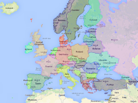

Explore the realm of Eurovision Song Contest.
SONG MATCH matches selected Eurovision Song Contest songs with the realm of Eurovision Song Contest songs or the collection of western pop music.
Listen to and share your interesting discoveries!

MOOD OF EUROPE shows the current mood of Europe based on Twitter tweets related to the European Song Contest.
Copyright © 2014 CoSound. See Copyright, Disclaimer and Cookies Policy.
Find Song
Search for a Eurovision song
You can search on song title, artist, country or year of contest.
"1967" Songs from 1967
"2012 love" Songs with love in the title from 2012
"Finland" Finlands entrances
Select Comparison
Compare with ?
Match selected songs with the realm of all Eurovision Song Contest songs and/or more than 10,000 most popular the Western pop songs by ticking the boxes.
The match is as good as possible within the realm of songs for comparison, but there might not necessarily be a very close match.
Compare on ?
- Tempo is the perceived number of beats per minute.
- Rhythm defines the rhythmic structure.
- Mood defines the overall positive or negative expressed mood of the song.
- Melody defines characteristic melodic elements of the song.
- Energy defines the energy level of the song.
- Timbre defines the characteristic color of the music. Timbre is what makes notes of two instruments with same pitch and loudness sounding different.
"" is most similar to*
More"" is least similar to*
More* Among the songs in the chosen collection.
Explore and share match
Importance of music aspects in match ?
- Tempo is the perceived number of beats per minute.
- Rhythm defines the rhythmic structure.
- Mood defines the overall positive or negative expressed mood of the song.
- Melody defines characteristic melodic elements of the song.
- Energy defines the energy level of the song.
- Timbre defines the characteristic color of the music. Timbre is what makes notes of two instruments with same pitch and loudness sounding different.
Tempo
Rhythm
Mood
Melody
Energy
Timbre
Shared discoveries
Mood Map
See the current Eurovison twitter mood across Europe.
Negative Neutral Positive
Mood timeline
24 hour timeline of the mood of Europe in selected countries based on Tweets linked to the Eurovision Song Contest.
Tweets
Discoveries
CoSound is a strategic research project funded by Danish Strategic Research Council, which investigates technological methods and tools for linking audio streams and user interaction data in order to improve interactivity and user experience.
The vision is to develop a flexible modular audio data processing platform for new products and services in the commercial sector; the public service sector; and in educational and cultural research. The project prototypes and evaluate solutions in all these areas.
An integral part of the project is a modular CoSound platform for development and test of algorithms and interactive experiments which has been employed in Refrain.
The CoSound partners DTU Compute and Geckon ApS has collaborated to create Refrain.
The team consisted of Peter Overgaard, Jesper Fyhr Knudsen, and Jacob Poul Richardt, Geckon ApS. Bjørn Sand Jensen, Jens Madsen, Rasmus Troelsgaard, Patrick Gadd, Martin Hastrup, Sune Lehmann Jørgensen, and Jan Larsen, DTU Compute.
Danish Sound Innovation Network functions as hub for businesses, research and knowledge institutions, and professional organizations in order to facilitate and contribute to creating value for the Danish national ecosystem for SOUND.
Danish Sound is funded by the Danish Agency for Science, Technology and Innovation and has more than 550 individual members from 320+ organizations.
One of the focus themes is Digital Media where Denmark has a position of strength and critical mass of activity in both research and businesses.
Danish Sound is an innovation partner of CoSound and assist with dissemination of results.
For further information, contact the secretariat at sekretariat@danishsound.org.
Copyright, Disclaimer and Cookies Policy
By using the service, users accept to the following copyright and disclaimers.
Copyright © 2014 CoSound. Contact Jan Larsen, DTU Compute, janla@dtu.dk.
Permission is hereby granted to use the Refrain service free of charge for non-commercial purposes. Any other commercial or non-commercial use of the service, the concept, data is subject to written permission by the copyright holders.
The Refrain service is provided “as is”, without warranty of any kind, express or implied, including but not limited to the warranties of merchantability, fitness for a particular purpose and noninfringement. In no event shall the authors or copyright holders be liable for any claim, damages or other liability, whether in an action of contract, tort or otherwise, arising from, out of or in connection with the service or the use or other dealings in the service.
A copy of shared discoveries is kept to support the listing of discoveries in this service. These data might be used in anonymous form for non-commercial research purposes only.
The service will use a cookie to remember your choices. If you wish to avoid cookies altogether, you will have to disable cookies in your browser. However, disabling cookies can result in certain functions of the website being unavailable to you. Cookies will not be used to collect personally identifiable information.